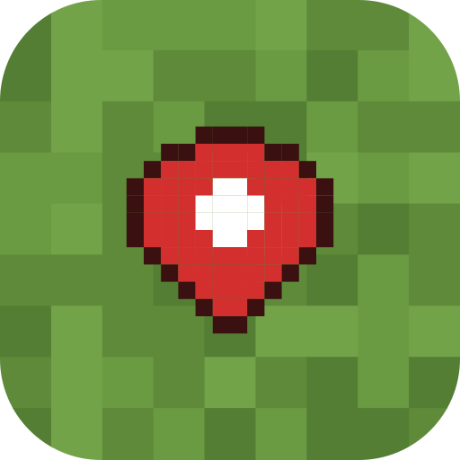
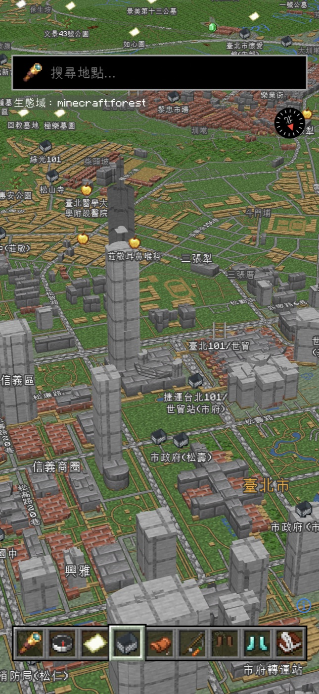
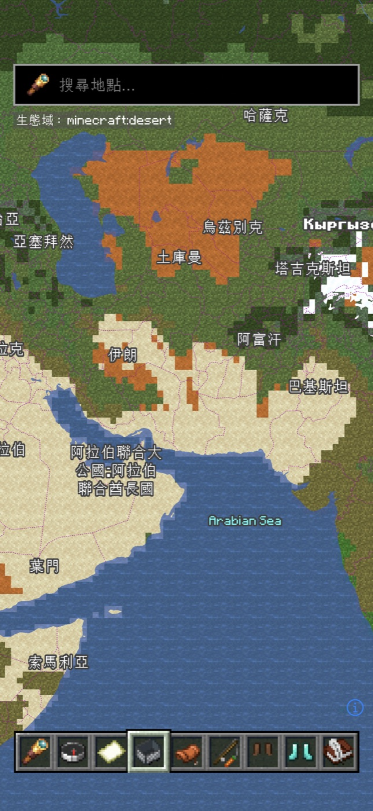

方塊地圖
把世界變成一張 Minecraft 地圖
下載 APKAndroid 10 以上・0.1.0・22 MB


它可以幹嘛
- 草方塊、石頭路、木板和磚塊的 3D 房子，地點變成綠寶石、麵包、金蘋果
- 依真實的氣候帶分成 叢林 沙漠 雪原 等 11 種生態域
- 搜尋地點、汽車／機車／腳踏車／步行路線，中文語音導航
- 螢幕關掉也繼續導航，進度顯示在通知列
- 走進新的生態域會解鎖「冒險時光」
第一次打開
App 裡沒有附 Minecraft 的材質。第一次打開時按「下載材質」，它會從 Mojang 的官方伺服器下載目前版本的 Minecraft: Java Edition（約 40 MB），只把地圖要用的材質留在你的手機上。你需要擁有 Minecraft。
怎麼裝
下載完點開檔案，手機問要不要允許「安裝不明應用程式」就按允許。打開後允許定位，導航時想在通知列看到進度，也要允許通知。
用到的資料
地圖資料 © OpenStreetMap 貢獻者・圖磚 OpenFreeMap・搜尋 Photon・路線 Valhalla（FOSSGIS）・氣候 Köppen-Geiger（Kottek 等，2006）・字型 Monocraft、GNU Unifont（SIL OFL 1.1）